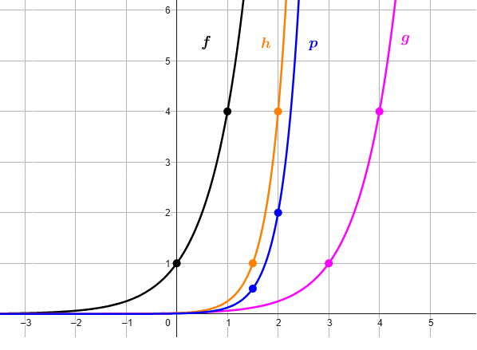

Rappresentare i grafici delle seguenti funzioni e scrivere quale trasfromazione ha subito il
grafico di ciascuna di esse rispetto a quello della funzione precedente.
\(f(x) = 4^{x}\)
\(g(x) = 4^{x - 3}\)
\(h(x) = 4^{2x - 3}\)
\(p(x) = \dfrac{4^{2x - 3}}{2}\)
Soluzione

Esercizio
Consideriamo la funzione \(f(x) = 3^{x}\).
Scrivere la funzione \(g\) il cui grafico sia la dilatazione verticale di fattore \(4\) del grafico di
\(f\).
Scrivere la funzione \(h\) il cui grafico sia la traslazione di \(2\) unità verso il basso del grafico
di \(g\).
Scrivere la funzione \(p\) il cui grafico sia la traslazione di \(1\) unità verso destra del grafico di
\(h\).
Soluzione
\(g(x) = 4\, 3^{x}\)
\(h(x) = 4\, 3^{x} - 2\)
\(p(x) = 4\, 3^{x - 1} - 2\)
Esercizio
Consideriamo la funzione \(f(x) = 7^{x}\).
Scrivere la funzione \(g\) il cui grafico sia la dilatazione orizzontale di fattore \(3\) del grafico di
\(f\).
Scrivere la funzione \(h\) il cui grafico sia la traslazione di \(2\) unità verso il sinistra del
grafico di \(g\).
Scrivere la funzione \(p\) il cui grafico sia la contrazione verticale di fattore \(5\) del grafico di
\(h\).